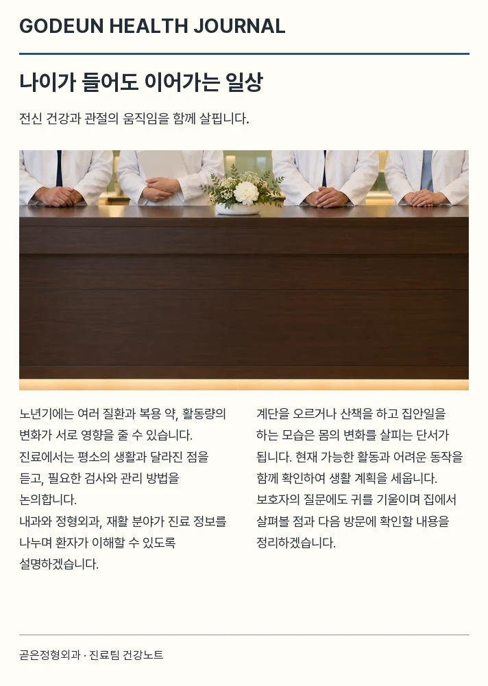
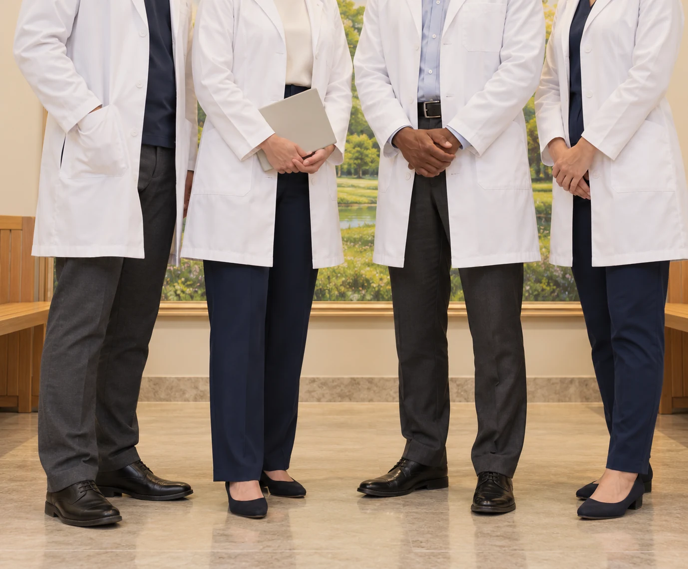
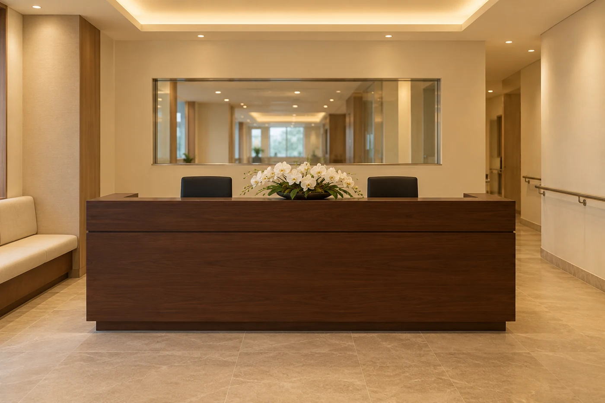
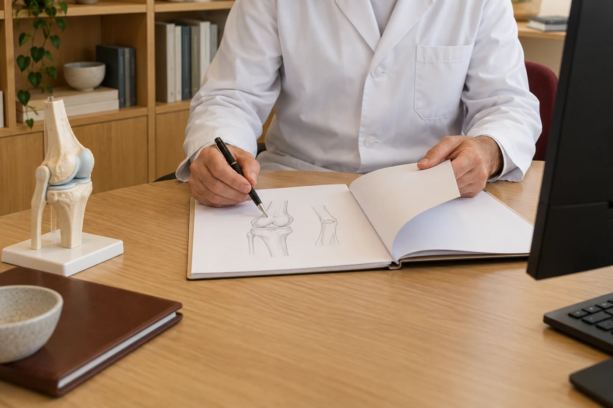

언론 보도부터 병원 소식까지
곧은정형외과의 다양한 이야기를 전합니다.
곧은정형외과, 몸의 변화와 생활을 함께 살피는 진료, 관절의 회복에서 일상의 활동으로
환자와 가족이 이해할 수 있는 설명, 그 위에서 치료와 돌봄의 방향을 함께 논의합니다.
‘몸의 변화와 생활을 함께 살피는 진료’ 를 이어 가기 위해 곧은 정형외과는 노년기의 건강과 움직임을 함께 확인하는 통합건강 진료안내를 마련하고 있습니다.
통합건강 진료에서는 몸 상태와 생활을 함께 듣고, 일상의 활동에서 느끼는 불편과 운동 습관을 살피는 과정을 바탕으로
현재의 기능과 생활 여건을 이해하며 각자에게 필요한 진료와 건강 관리 계획을 세우는 데 관심을 기울입니다.
통합건강 진료는 내과와 노년기 전신 상태를 살피는 이준서 원장이 담당하며,
만성질환과 일반적인 건강 문제는 김유림 진료과장이 진찰 결과와 생활 정보를 함께 검토하여 설명합니다.
노년기에는 여러 질환과 복용 약, 움직임의 변화가 서로 영향을 줄 수 있어 함께 살펴볼 필요가 있습니다.
진료 중에는 평소의 상태와 달라진 점을 확인하고 필요한 검사와 관리 방법을 논의하며
기능 저하가 우려되는 부분을 살펴보고 집에서의 활동과 운동을 이어갈 때 주의할 점도 함께 안내하겠습니다.



